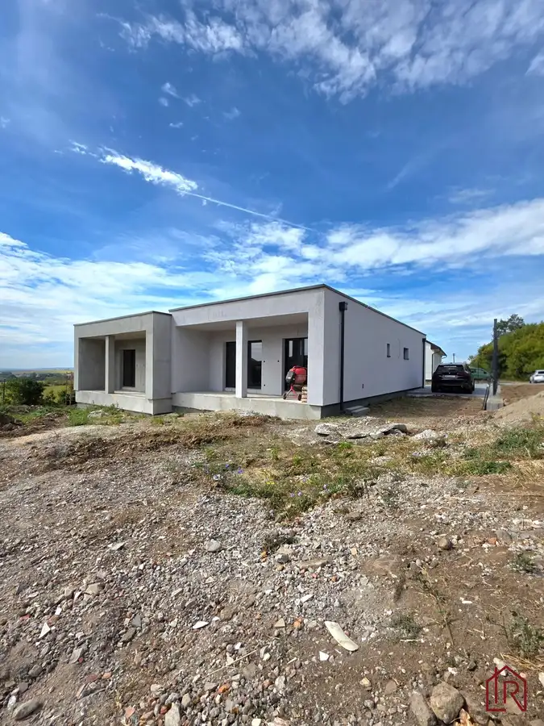
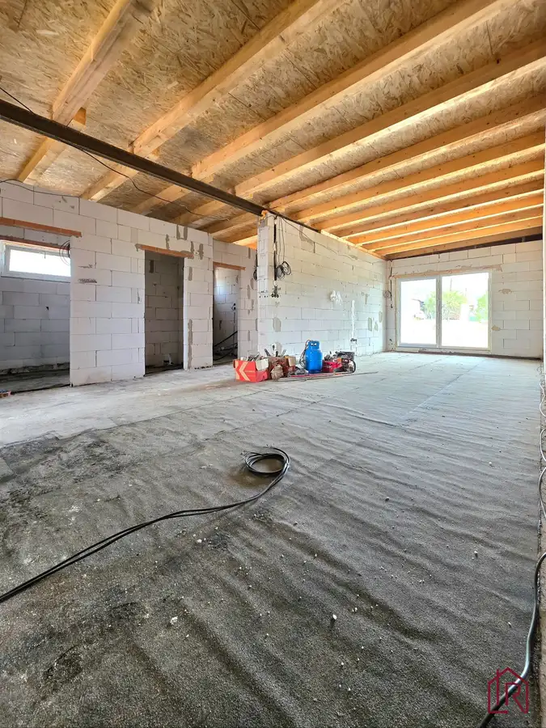
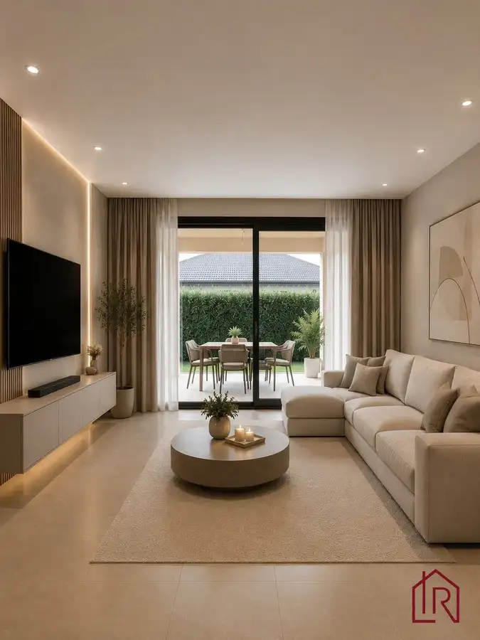
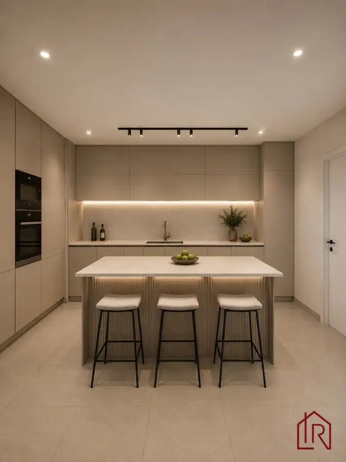
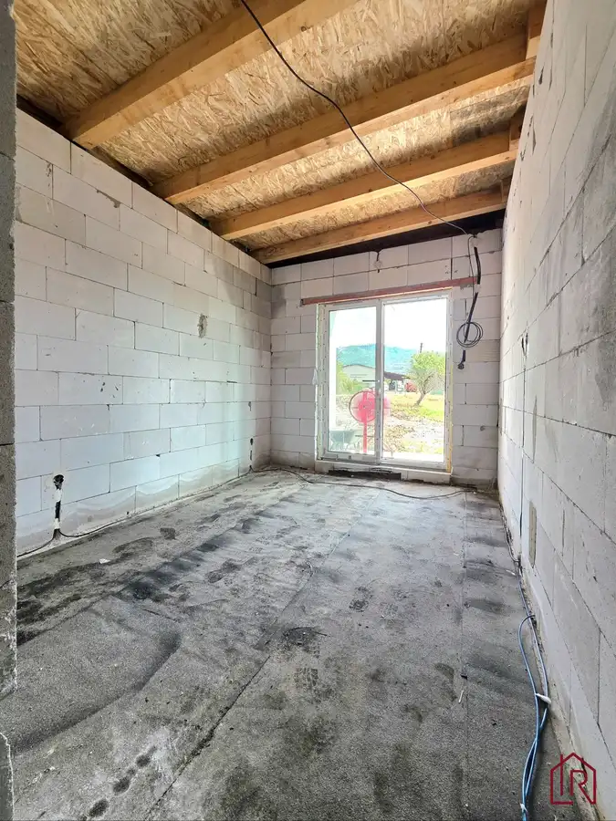
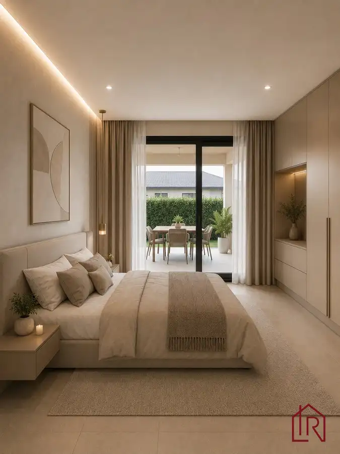
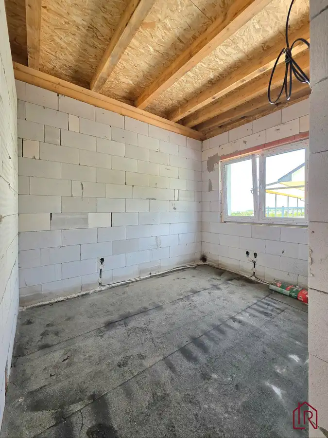
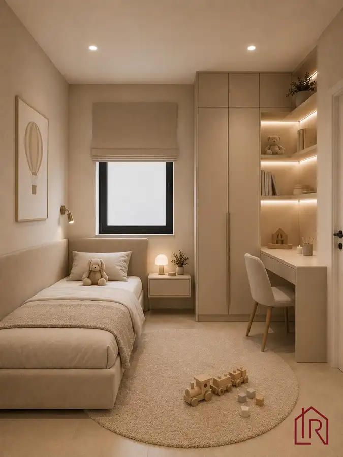

Rodinný dom na kľúč, vrátane kuch. linky, novostavba, V. Kamenica
Okolie, Vyšná Kamenica









- Dispozícia4-izbový
- Plocha101.58 m²
- Poschodie0. z 1
- Stavúplne prerobený
- Vlastníctvoosobné
- Energetická triedaA
O nehnuteľnosti
IMPULZ REAL a Lucia Talianová ponúkajú na predaj 4-izbový rodinný dom v obci Vyšná Kamenica. Novostavba bungalovu s úžitkovou plochou 101 m² sa nachádza na rovinatom pozemku o výmere 600 m² a predáva sa v ŠTANDARDE (kompletne dokončený dom vrátane podláh, sanity, vnútorných dverí). Možnosť dokončenia interiéru podľa vlastných predstáv v rámci ceny (dokončuje stavebník). AKCIA: KUCHYNSKÁ LINKA S OSTROVĆEKOM V CENE (bez spotrebičov). Pozemok je osadený na kraji obce, v pokojnom prostredí s peknými výhľadmi na prírodu.
Ideálne bývanie pre rodinu, ktorá hľadá pokoj vidieka, moderné technológie a nízke prevádzkové náklady. Dom sa nachádza v krásnom prostredí Slanských vrchov len 30 minút od Košíc.
Aktuálny stav: dokončená hrubá stavba, fotografie z aktuálneho stavu doložené v inzeráte. Doplnené vizualizačné fotografie slúžia na lepšiu predstavu klienta o možnom dokončení interiéru.
Interaktívny pôdorys nájdete na tejto stránke:
https://floorplanner.com/projects//spaceplanner
TECHNICKÉ PARAMETRE A INFORMÁCIE:
DISPOZÍCIA: 4-izbový rodinný dom
TYPOVÉ RIEŠENIE: bungalov, súčasť dvojdomu
ÚŽITKOVÁ PLOCHA: 101 m²
ZASTAVANÁ PLOCHA: 127 m²
TERASA: 15,2 m²
POZEMOK: 600 m²
PODLAŽNOSŤ: 1 nadzemné podlažie
ORIENTÁCIA: obývacia izba a terasa severovýchod, vstup do domu juhozápad
STAV: hrubá stavba s platným stavebným povolením
KONŠTRUKCIA: pórobetónové murivo so železobetónovým vencom so zateplením 15cm polystyrénom
STRECHA: plochá strecha s hydroizoláciou Fatrafol
KROV: drevená konštrukcia so zateplením striekanou PUR penou 30cm
ZATEPLENIE: áno
ENERGETICKÝ CERTIFIKÁT: trieda A
CHARAKTER STAVBY: nízkoenergetická stavba
OKNÁ: plastové, trojsklo, v obývačke a spálni francúzske,okná majú predprípravu na vonkajšie žalúzie
VYKUROVANIE: podlahové vykurovanie v celom dome
ZDROJ TEPLA: tepelné čerpadlo vzduch – voda
PRÍPRAVA NA KLIMATIZÁCIU: áno
KOMÍN: Schiedel s jedným prieduchom pre budúce osadenie krbu
IS: ELI, verejný vodovod, žumpa s objemom 12m3/ čistička
DAŽĎOVÁ VODA: retenčná nádrž
PARKOVANIE: minimálne 2 parkovacie miesta na pozemku
PRÍSTUP: napojenie na obecnú komunikáciu
PREDPOKLADANÉ DOKONČENIE: 2 mesiace pod podpise ZoBKZ
PREDAJNÁ CENA: 260 000EUR
DISPOZÍCIA DOMU:
Dom je navrhnutý s dôrazom na praktické rodinné bývanie a efektívne využitie priestoru. Denná časť je oddelená od nočnej zóny, čo zabezpečuje komfort všetkým členom domácnosti.
Obývacia izba s kuchyňou: otvorený a vzdušný priestor s výstupom na terasu
Spálne: 3 samostatné nepriechodné izby vhodné ako rodičovská spálňa, detské izby alebo pracovňa
Kúpeľňa: samostatná kúpeľňa s toaletou
Hosťovská toaleta: samostatné WC s umývadlom
Technická miestnosť: priestor pre technológiu domu a úložné možnosti
Vstupná chodba: komfortný vstupný priestor
Terasa: 15,2 m² s napojením na záhradu
STAV DOMU A TECHNICKÉ RIEŠENIE:
Dom realizuje overený stavebník s dlhoročnými skúsenosťami a desiatkami úspešne dokončených projektov. Budúci majiteľ získa moderné bývanie postavené podľa aktuálnych stavebných a energetických štandardov.
Samostatné obvodové múry každého domu: zabezpečujú vyššiu mieru súkromia. Medzi domami tepelná a zvuková izolácia: výrazne obmedzuje prenos hluku
ŠTANDARD VYHOTOVENIA:
Dom sa predáva v štandarde, čo umožňuje novému majiteľovi nasťahovať sa bez potreby ďalších stavebných prác.
- kompletné podlahy v celom dome, obklady a dlažby v kúpeľni a WC, sanita v kúpeľni a toalete, interiérové dvere vrátane zárubní, vymaľované steny, kompletné dokončenie interiéru, predpríprava na klimatizáciu, AKTUÁLNE VRÁTANE KUCHYNSKEJ LINKY S OSTROVČEKOM (bez spotrebičov)
Možnosť výberu podláh, obkladov, dlažieb a interiérových dverí podľa vlastných predstáv
Pozemok bude vyrovnaný a upravený
- po dohode možnosť realizácie rekuperácie, prípadne zabezpečovacieho a kamerového systému
Predávajúci zabezpečí kompletné podklady ku kolaudácii
LOKALITA A OKOLIE:
Vyšná Kamenica ponúka pokojné bývanie v krásnom prírodnom prostredí Slanských vrchov s dobrou dostupnosťou do Košíc.
DOSTUPNOSŤ DO KOŠÍC: približne 27 km, cca 30 minút autom
AUTOBUSOVÁ DOPRAVA: pravidelné medzimestské autobusové spojenie
MATERSKÁ ŠKOLA, EVANJELICKÝ KOSTOL: priamo v obci
MATERSKÁ ŠKOLA A ZÁKLADNÁ ŠKOLA: v susednej obci Nižná Kamenica
OBČIANSKA VYBAVENOSŤ: obec Bidovce vzdialená približne 7 km
V BIDOVCIACH NÁJDETE: základnú školu, materskú školu, lekárov, potraviny, služby a čerpaciu stanicu
TURISTIKA: množstvo turistických trás v okolí Slanských vrchov
CYKLISTIKA: vhodné podmienky pre cyklovýlety a športové aktivity
PRÍRODA: pokojné prostredie mimo mestského ruchu
NÁZOR MAKLÉRA
Táto nehnuteľnosť predstavuje ideálnu voľbu pre klientov, ktorí túžia po modernom rodinnom bývaní s nízkymi prevádzkovými nákladmi a zároveň nechcú bývať v rušnom meste. Veľkým benefitom je priestranný pozemok, kvalitné technické riešenie, tepelné čerpadlo, možnosť výberu štandardov podľa vlastného vkusu a výborná dostupnosť do Košíc. Oceňujem najmä premyslenú dispozíciu, súkromie zabezpečené samostatnými múrmi dvojdomu a krásne prírodné prostredie Slanských vrchov.
KONTAKT: Pre bližšie informácie kontaktujte kedykoľvek certifikovaného rodinného realitného makléra: Lucia Talianová, , (certifikovaný maklér NARKS - Národná asociácia realitných kancelárií Slovenska).
Viac ako nehnuteľnosť. DOMOV
V Impulz Real spájame profesionálny rozum s ľudským srdcom. Zabezpečíme Vám nielen kompletný a bezpečný servis (advokát, financovanie, energie) – kvalita je náš štandard, ale hlavne pochopenie pre Váš príbeh. Pomôžeme Vám s predajom aj Vašej nehnuteľnosti, prípadne nájsť domov, ktorý si zamilujete, a postaráme sa o Vás počas celého procesu.
„Sme realitní experti so zmyslom pre rodinu.“
IMPULZ REAL – Vaša Rodinná Realitka, ktorej DÔVERUJETE
Parametre
- Zastavaná plocha
- 127 m²
- Celková rozloha
- 600 m²
- Úžitková plocha
- 101.58 m²
- Poschodie
- prízemie
- Počet poschodí
- 1
- Počet izieb
- 4
- Vlastníctvo
- osobné
- Stav
- úplne prerobený
- Status
- aktívne
- Odvoz odpadu
- áno
- Voda
- verejný vodovod
- El. napätie
- 230/400V
- Plyn
- nie
- Kanalizácia
- žumpa
- Internet
- optika
- Kúpeľňa
- vaňa
- Vykurovanie
- vlastné
- Balkón
- nie
- Lódžia
- nie
- Terasa
- áno - 1
- Pivnica
- nie
- Garáž
- nie
- Parkovanie
- vonkajšie
- Inžinierske siete
- áno
- Postavené z
- Porotherm
- Zariadenie
- nezariadený
- Zateplený objekt
- áno
- Strecha
- po rekonštrukcii
- Energetický certifikát
- A
- Predzáhradka
- nie
- Bezbariérový prístup
- áno
- Okná
- plastové
- Terén
- rovina
- Prístupová cesta
- asfaltová cesta
- Novostavba
- áno
- Dátum zverejnenia
- 2026-09-09
Kde to je
Mohlo by Vás zaujímať
 ZáhradyNové
75 000 €: Záhrada s chatkou, Košice – Krásna, 716 m², elektrina
mestská časť Krásna, Košice
716 m²
ZáhradyNové
75 000 €: Záhrada s chatkou, Košice – Krásna, 716 m², elektrina
mestská časť Krásna, Košice
716 m²
 Rodinné domyNové
245 000 €Rezervované, Celoročné bývanie pri Košiciach, pozemok 901 m2
Okolie
4-izbový150 m²
Rodinné domyNové
245 000 €Rezervované, Celoročné bývanie pri Košiciach, pozemok 901 m2
Okolie
4-izbový150 m²
 Nebytové priestoryNové
150 000 €: Investičný priestor, Lorinčík, 4,3 % výnos
mestská časť Lorinčík, Košice
52.23 m²
Nebytové priestoryNové
150 000 €: Investičný priestor, Lorinčík, 4,3 % výnos
mestská časť Lorinčík, Košice
52.23 m²